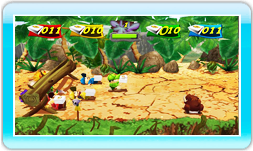

11 |
Pizza Sauvage Express |
 |

Dans Pizza Sauvage Express, tu devras repousser les sauvages tout en évitant d’innombrables pièges.
Tu dois terminer chaque manche dans le temps imparti, mais tu peux décider d’accélérer pour mettre la pression sur ton adversaire. Si tu renverses un obstacle, tu perdras du temps. Fais attention aux sauvages : si l’un deux t’attrape, tu as perdu !
Balance alternativement la télécommande Wii et le Nunchuk pour courir. Appuie sur
Reste en retrait pour voir arriver les obstacles. |
 pour sauter et sur
pour sauter et sur  pour te pencher/glisser.
pour te pencher/glisser.
 |
 |
 |